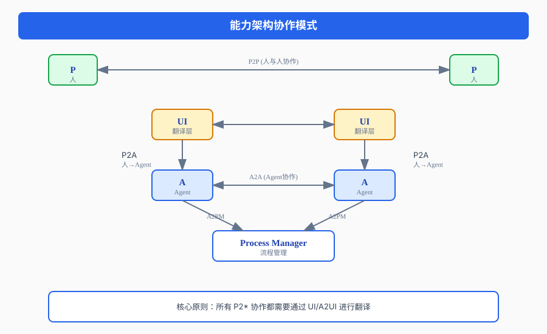
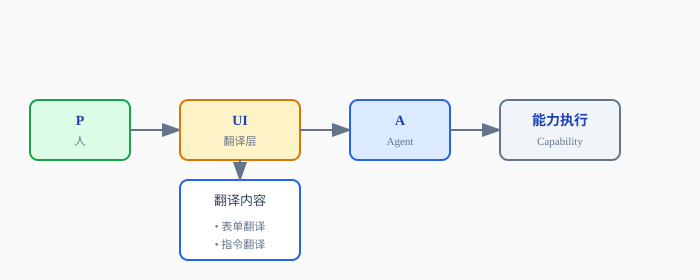
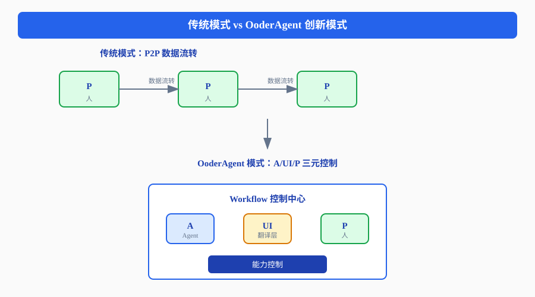
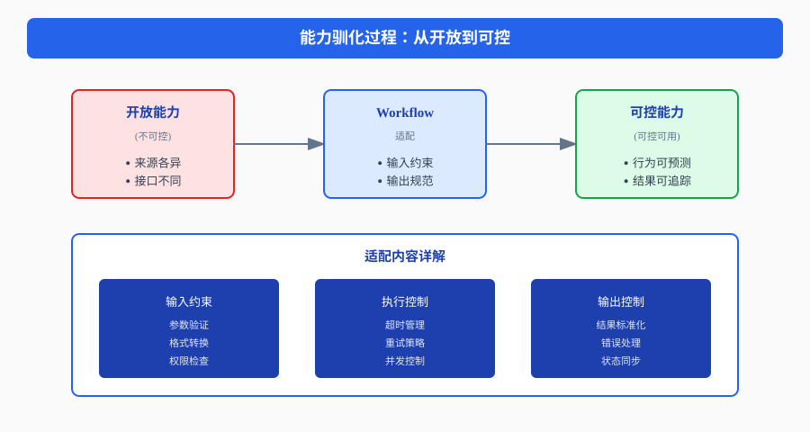
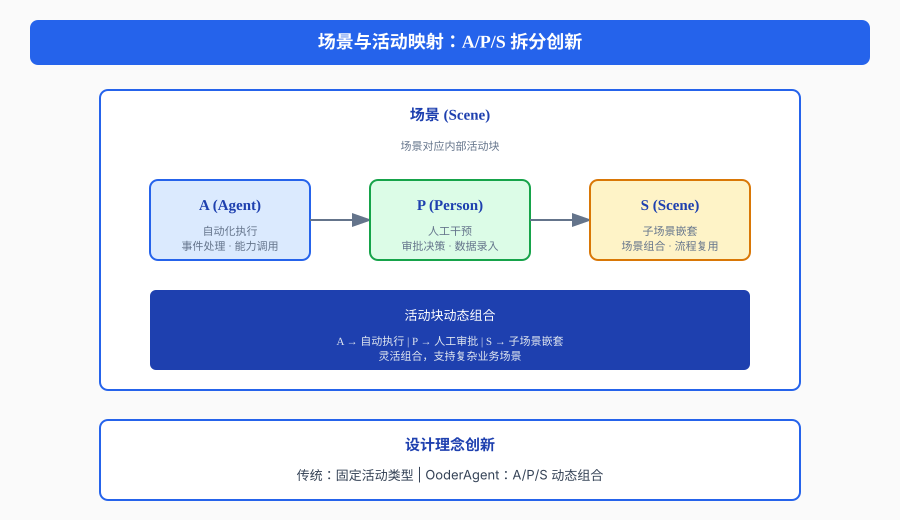
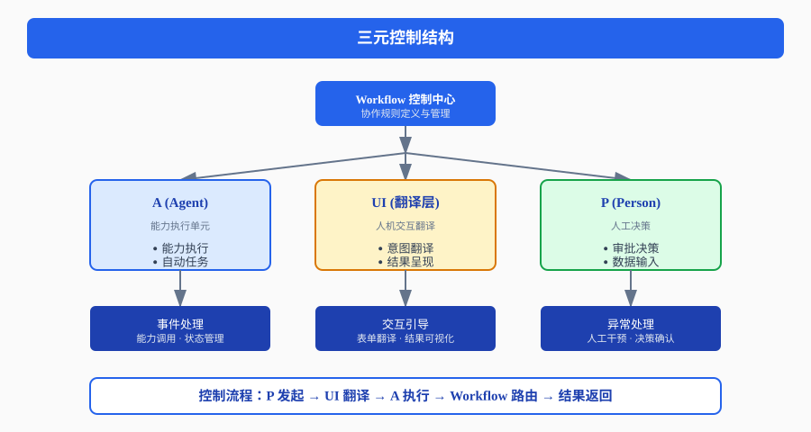
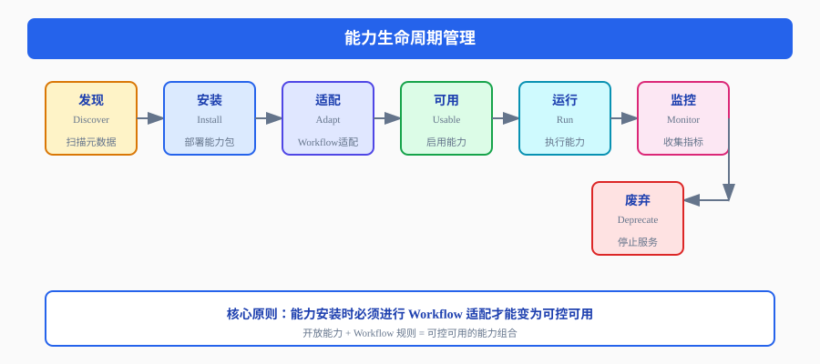
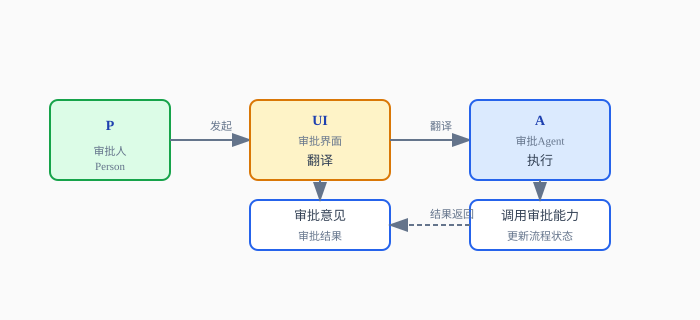
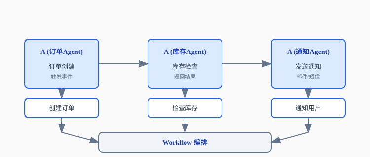

一 能力架构的本质
1.1 什么是能力架构
能力架构是 OoderAgent 的核心设计理念，它将系统功能抽象为独立的"能力"单元，并通过四种协作模式实现能力的互联互通：

1.2 四种协作模式详解
| 协作模式 | 全称 | 说明 | 翻译需求 |
|---|---|---|---|
| P2P | Person to Person | 人与人之间的直接协作 | 需要 UI 翻译 |
| P2A | Person to Agent | 人与 Agent 的交互 | 需要 UI/A2UI 翻译 |
| A2A | Agent to Agent | Agent 之间的自动协作 | 无需翻译 |
| A2PM | Agent to Process Manager | Agent 与流程管理的交互 | 无需翻译 |
1.3 UI/A2UI 的翻译作用

A2UI 的作用：
- 自动生成翻译界面
- 动态适配不同能力
- 实现人机交互的标准化
二 为什么需要 Workflow
2.1 协作规则的本质
Workflow 不是简单的流程引擎，而是协作规则的定义与管理机制。
核心问题
- 能力是开放的、不可控的
- 不同能力之间的协作需要规则约束
- 业务场景需要特定的协作模式
Workflow 的解决方案：
开放能力 + Workflow 规则 = 可控可用的能力组合
2.2 Workflow 的控制理论

2.3 A (Agent) 的统一整合
Agent 统一了传统分散的概念：
| 传统概念 | Agent 整合 |
|---|---|
| 事件 (Event) | Agent 事件处理 |
| 自动任务 (Auto Task) | Agent 自动执行 |
| 业务调用整合 | Agent 能力编排 |
| 消息通知 | Agent 通信机制 |
| 状态管理 | Agent 状态机 |
统一后的优势：
- 单一入口，统一管理
- 状态可追踪，行为可审计
- 能力可组合，流程可编排
三 能力为什么需要 Workflow
3.1 能力的开放性与不可控性
能力的特点
- 开放性：能力来自不同来源，接口各异
- 独立性：能力独立部署，独立运行
- 不可控性：能力行为不可预测，需要约束
3.2 Workflow 的"驯化"作用
Workflow 通过适配实现能力的"驯化"：

3.3 能力安装的 Workflow 适配
能力安装时的 Workflow 适配流程：
能力安装流程：
1. 能力发现
└── 扫描能力元数据
└── 解析能力接口
2. Workflow 适配
└── 创建能力适配器
└── 定义输入输出规范
└── 配置执行策略
3. 场景绑定
└── 关联业务场景
└── 配置触发条件
└── 设置权限控制
4. 可用性验证
└── 测试能力执行
└── 验证控制效果
└── 确认可用状态四 场景与活动的映射创新
4.1 传统活动模型
传统 BPM 的活动模型：
流程 (Process)
├── 活动 (Activity)
│ ├── 用户任务
│ ├── 服务任务
│ └── 脚本任务
└── 网关 (Gateway)
├── 排他网关
├── 并行网关
└── 包容网关4.2 OoderAgent 的创新：A/P/S 拆分

4.3 设计理念创新
| 传统模式 | OoderAgent 模式 | 创新点 |
|---|---|---|
| 活动类型固定 | A/P/S 动态组合 | 灵活性 |
| 流程线性执行 | 场景嵌套复用 | 模块化 |
| 人工任务单一 | P 支持多种交互 | 丰富性 |
| 自动任务分散 | A 统一管理 | 一致性 |
五 Workflow 控制理论的核心机制
5.1 三元控制结构

5.2 控制流程
控制流程：
1. 触发阶段
P 发起请求 ──► UI 翻译 ──► A 接收 ──► Workflow 路由
2. 执行阶段
Workflow 分发 ──► A 执行能力 ──► 结果返回 ──► UI 呈现
3. 决策阶段
A 提供选项 ──► UI 展示 ──► P 决策 ──► A 继续执行
4. 完成阶段
A 完成任务 ──► Workflow 归档 ──► UI 通知 ──► P 确认5.3 控制规则
输入控制
- 参数验证
- 格式转换
- 权限检查
执行控制
- 超时管理
- 重试策略
- 并发控制
输出控制
- 结果标准化
- 错误处理
- 状态同步
六 能力安装管理控制
6.1 能力生命周期

6.2 能力控制矩阵
| 控制维度 | 控制项 | 控制方式 | 控制效果 |
|---|---|---|---|
| 输入控制 | 参数验证 | Schema 校验 | 数据完整性 |
| 格式转换 | 适配器模式 | 接口兼容性 | |
| 权限检查 | RBAC | 访问安全性 | |
| 执行控制 | 超时管理 | 超时配置 | 资源保护 |
| 重试策略 | 指数退避 | 容错能力 | |
| 并发控制 | 信号量 | 性能稳定 | |
| 输出控制 | 结果标准化 | 响应模板 | 接口统一 |
| 错误处理 | 异常捕获 | 健壮性 | |
| 状态同步 | 事件通知 | 一致性 |
七 实际应用场景
场景一：能力安装与适配
用户故事
系统管理员需要安装一个新的"短信发送"能力。
流程：
1. 能力发现
└── 扫描短信能力包
└── 解析接口定义
└── 检查依赖项
2. Workflow 适配
└── 创建输入适配器（手机号格式验证）
└── 创建输出适配器（发送结果标准化）
└── 配置执行策略（超时10秒，重试2次）
3. 场景绑定
└── 绑定到"验证码发送"场景
└── 绑定到"告警通知"场景
4. 可用性验证
└── 测试发送验证码
└── 验证结果返回
└── 确认可用状态场景二：P2A 协作控制
用户故事
审批人员需要通过界面审批采购申请。

场景三：A2A 自动协作
用户故事
订单创建后自动触发库存检查和通知发送。

八 设计理念总结
8.1 核心创新点
| 创新点 | 传统方式 | OoderAgent 方式 |
|---|---|---|
| 协作模式 | P2P 数据流转 | A/UI/P 三元控制 |
| 活动模型 | 固定活动类型 | A/P/S 动态组合 |
| 能力管理 | 直接使用 | Workflow 适配驯化 |
| Agent 定位 | 分散概念 | 统一整合中心 |
8.2 核心价值
- 可控性：开放能力通过 Workflow 适配变为可控
- 灵活性：A/P/S 组合支持复杂业务场景
- 一致性：Agent 统一管理，接口标准统一
- 可追溯：全流程审计，行为可追踪
8.3 架构优势
能力开放性 + Workflow 控制理论 = 可控可用的能力生态
附录
A. 关键概念对照表
| 概念 | 说明 |
|---|---|
| P (Person) | 人，系统的使用者 |
| A (Agent) | Agent，统一的能力执行单元 |
| UI | 用户界面，P 与 A 的翻译层 |
| A2UI | 自动生成 UI 的能力 |
| Scene | 场景，业务流程的抽象 |
| Workflow | 工作流，协作规则的定义 |
| Capability | 能力，系统功能的抽象单元 |
B. 技术栈
| 技术领域 | 技术选型 |
|---|---|
| 后端框架 | Java 21, Spring Boot |
| 前端框架 | Vue 3, Element Plus |
| 工作流引擎 | ooder-bpm-web |
| AI 能力 | LLM Integration |
| 数据存储 | SQLite |
| 缓存服务 | Redis |
C. 关键文件路径
- Workflow 场景:
E:\github\ooder-skills\temp\ooder-Nexus\src\main\resources\scenes\workflow-scene.yaml - A2UI 场景:
E:\github\ooder-skills\temp\ooder-Nexus\src\main\resources\scenes\a2ui-scene.yaml - 能力模型:
E:\github\ooder-skills\mvp\src\main\java\net\ooder\mvp\skill\scene\capability\model\Capability.java